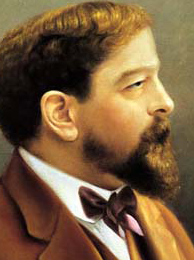

Debussy's music is noted for its sensory content and frequent use of nontraditional tonalities. The prominent French literary style of his period was known as Symbolism, and this movement directly inspired Debussy both as a composer and as an active cultural participant.